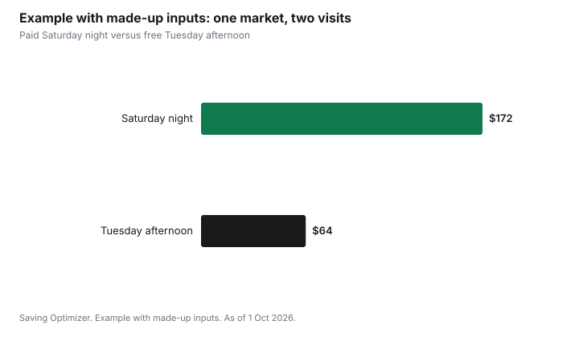

Events · Canada
Christmas Markets in Canada (2026): Admission, Free Days and Spending Less
The cheapest way to enjoy a Christmas market in Canada is to go when entry is free, decide your spending before you arrive, and treat food and drinks as the main cost rather than an afterthought. Many markets are free to enter at all times. The two large ticketed ones work differently: Toronto's Distillery Winter Village, open from 12 November 2026 to 3 January 2027, is free before 4 p.m. every day and all day Monday to Wednesday until 13 December, with timed tickets from $16 plus HST and fees at busy times. The Vancouver Christmas Market, open from 16 November to 24 December 2026, charges admission, starting at $7.99 for a presale single entry, with free entry for children 6 and under.
Key takeaways
- Distillery Winter Village, Toronto: 12 Nov 2026 to 3 Jan 2027, closed Christmas Day. Free before 4 p.m. daily and all day Monday to Wednesday through 13 Dec; tickets from $16 plus HST and fees otherwise; 9 and under free.
- Vancouver Christmas Market: 16 Nov to 24 Dec 2026 at Jack Poole Plaza. Single entry $7.99 presale or $11.99 to $13.99 standard; season pass $30.99 presale; family pass $69.99 presale; 6 and under free.
- Ottawa Christmas Market at Lansdowne is free to enter on its weekend dates.
- Admission is often the smallest cost. Set a cap for food, drinks and gifts and carry it separately.
- Example with made-up inputs: a family of four spends $64 on a free weekday afternoon instead of $172 on a ticketed Saturday night.
Admission: when markets are free and when they are not
Christmas markets in Canada fall into two groups. Most community, municipal and church markets are free to enter. A few large markets charge admission or require timed tickets at busy times to control crowds. The ticket rules are the first thing to read, because the same visit can be free on a Tuesday afternoon and paid on a Saturday night.
| Market | 2026 dates | Admission |
|---|---|---|
| Distillery Winter Village, Toronto | 12 Nov 2026 to 3 Jan 2027; closed 25 Dec | Free before 4 p.m. daily and all day Mon to Wed through 13 Dec. Tickets from $16 plus HST and fees on opening night, after 4 p.m. on weekends, Thursdays in December, and daily 14 to 31 Dec. Age 9 and under free |
| Vancouver Christmas Market, Jack Poole Plaza | 16 Nov to 24 Dec 2026 | Single entry $7.99 presale or $11.99 to $13.99 standard; season pass $30.99 presale or $35.99; family pass $69.99 presale or $84.99. Age 6 and under free |
| Ottawa Christmas Market, Lansdowne | Weekends from 20 Nov to 20 Dec, plus 31 Dec; closed 24 and 25 Dec | Free |
| Spruce Meadows International Christmas Market, Calgary | Weekends 13 Nov to 6 Dec 2026 | Ticketed; 2026 prices not yet published as of 1 Oct 2026 |
| Marché de Noël allemand de Québec | Begins 19 Nov 2026, Thursday to Sunday | Free entry |
At the Distillery, the free window covers most weekday afternoons in November and early December. If you can go before 4 p.m. or on a Monday to Wednesday before 14 December, admission costs nothing. The paid periods line up with the busiest evenings and the last two weeks before Christmas.
In Vancouver, a presale single ticket is the cheapest way in for one visit. If you plan two or more visits, compare a season pass with the cost of single tickets. A family pass makes sense only if it costs less than the single tickets your family would actually buy; children 6 and under are free anyway.
The real cost: food, drinks and gifts
Admission is usually the smallest part of a market visit. Hot drinks, mulled wine, sausages, crêpes, chocolate and small gifts add up quickly, and prices at seasonal stalls are often higher than the same items elsewhere. Market food is part of the experience, so plan for it rather than pretending it will not happen.
- Eat a meal before you go, then choose one or two signature treats instead of grazing.
- Set a per-person treat budget, especially for children, and give it to them in cash or as a set number of tokens.
- Decide in advance whether you are shopping for gifts. If you are, bring the list and its caps from the gift budget.
- Check whether a market sells reusable mugs with a deposit. Returning the mug gets the deposit back.
- Bring water and snacks for children, where allowed.
Getting there: transit, parking and timing
Parking near large downtown markets can cost more than admission, and it fills up on weekend evenings. Transit is often cheaper and easier. Both the Distillery District in Toronto and Jack Poole Plaza in Vancouver are reachable by public transit. A market visit on a weekday afternoon has the double benefit of free or cheaper entry and easier parking.
Weather matters for value. An outdoor market in freezing rain is less fun and pushes people into buying warm drinks. Check the forecast and keep the visit flexible if your market has free entry on several days.
Gifts at the market: when it is a good buy
Christmas markets are good for handmade and local gifts that are not sold elsewhere, such as ornaments, crafts, food from local producers and art. They are less useful for items you could find at a regular shop, where the price is often higher at a seasonal stall. Before buying, ask whether the item is on your list, whether the price fits the cap, and whether the vendor accepts returns. Many market vendors do not.
Ask about payment. Many vendors take cards and tap payments, but some prefer cash, and a few add a surcharge for credit cards. A set amount of cash in an envelope is also an easy way to keep to a cap.
Free alternatives
Many municipalities run free holiday markets, tree lightings and light displays, often on a single weekend. Libraries and community centres host craft fairs and holiday events. Church and school bazaars are often cheaper than large markets for baked goods and handmade gifts. For ideas, see free and cheap family outings.
Example with made-up inputs: two visits for a family of four
These numbers are an example with made-up inputs. They are not market prices. A family of two adults and two children aged 8 and 11 plans a visit to a market with free weekday afternoons and paid weekend evenings.
Option one is a Saturday night: two adult tickets and one paid child ticket at a made-up $20 each with fees, $60; parking, $25; treats for four, $55; a craft gift, $32. Total $172.
Option two is a Tuesday afternoon: free admission, transit at a made-up $14 for the family, a meal at home first, a $10 treat budget per person for $40, and a $10 ornament instead of the craft gift. Total $64.
| Line | Saturday night | Tuesday afternoon |
|---|---|---|
| Admission | $60 | $0 |
| Getting there | $25 parking | $14 transit |
| Treats | $55 | $40 |
| Gift | $32 | $10 |
| Total | $172 | $64 |

Common mistakes
- Going on the busiest paid evening when a free afternoon was an option.
- Arriving hungry and buying a full meal from stalls.
- Driving and paying event parking when transit is available.
- Buying gifts that are not on the list because the stall is festive.
- Buying a family pass that costs more than the single tickets you would use.
Outings are their own line in the December spending plan. Put the market there, with its cap, and keep the gift money separate.
Sources
- The Distillery Winter Village, FAQ and tickets pages, and news release on Newswire, as of 1 Oct 2026. Dates 12 Nov 2026 to 3 Jan 2027, closed Christmas Day; free hours; tickets from $16 plus HST and fees; age 9 and under free.
- Vancouver Christmas Market, Plan Your Visit, FAQ and tickets pages, as of 1 Oct 2026. Dates 16 Nov to 24 Dec 2026; ticket, season and family pass prices; 6 and under free.
- Ottawa Christmas Market, marchenoelottawa.com, as of 1 Oct 2026. Free entry; 2026 dates.
- Spruce Meadows, International Christmas Market page, as of 1 Oct 2026. 2026 dates.
- Marché de Noël allemand de Québec, schedule page, as of 1 Oct 2026.
- The family of four, the $172 and $64 totals and every amount in the example table and chart are an example with made-up inputs.
Frequently asked questions
Is the Distillery Winter Village free in 2026?
Yes, at some times. As of 1 Oct 2026, the Distillery Winter Village is free before 4 p.m. every day and all day Monday to Wednesday through 13 December. Tickets from $16 plus HST and fees are needed on opening night, after 4 p.m. on weekends, on Thursdays in December and daily from 14 to 31 December. Children 9 and under are free.
How much are Vancouver Christmas Market tickets?
For 2026, a single entry is $7.99 presale or $11.99 to $13.99 standard, a season pass is $30.99 presale or $35.99, and a family pass is $69.99 presale or $84.99. Children 6 and under are free. The market runs 16 November to 24 December 2026.
Are there free Christmas markets in Canada?
Yes. Many community and municipal markets are free. The Ottawa Christmas Market at Lansdowne is free to enter on its 2026 weekend dates, and the German Christmas Market in Quebec City has free entry.
How do I spend less at a Christmas market?
Go when admission is free, take transit, eat before you arrive, set a treat budget per person in cash, and buy gifts only if they are on your list and under its cap.
Researched and drafted with AI assistance and fact-checked against official Canadian sources. How we create content.
Disclosure: Saving Optimizer may earn a commission if a partner link is added later, such as a ticketing or cash-back offer type. No partnership with any market is claimed on this page, and no market is ranked. Education only.